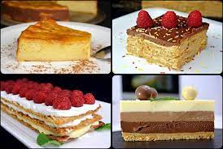

Magdalenas caseras
Esponjosas magdalenas con el sabor tradicional de siempre. Ideales para desayunos y meriendas.
Rosquillas de anís
Deliciosas rosquillas crujientes por fuera y tiernas por dentro.
Tartas surtidas Surtido de tartas, con ingredientes naturales y mucho mimo.
